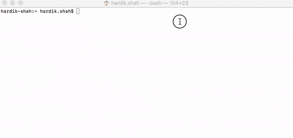

Quick demo using terminal
Integrate into your project
Description
A customizable bot. It's hsbot. Pass your custom template and you are ready to use your own bot.
Features
- Pass custom template. Template should be in format as defined.
- You can integrate with your system easily.
- Analyze user chat history.
Install
$ npm install hsbot -g
"OR"
$ npm i install hsbot
Usage
Usage: hsbot
Now you are ready to use hsbot.
Points to keep in mind
- userId: UserId is mandatory.
- userName: (optional) If pass it will not ask you about your name. If not, hsbot will ask you about your name first.
- topicList and topics: These two files you need to pass to the constructor of hsbot. You can find template under hsbot -> db -> data
- Template: topicList.json and topics.json
Example:
var topicList = require('../db/data/topicList.json'); // Your file path as per defined template.
var topics = require('../db/data/topics.json'); // Your file path as per defined template.
const HSBot = require('hsbot');
const hsBot = new HSBot(topicList, topics);
var userId = "aQ11zyTr4u7I";
var userName;
// userId (Mandatory)
// userName (User Name)
// human_text (Your answer/query, the question asked by HSBot)
hsBot.transformAndReply(userId, userName, human_text, function(err, data){
console.log("HSBot:", data);
});